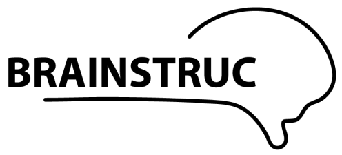
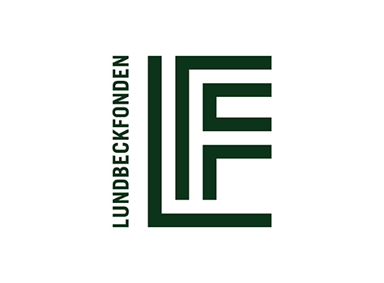

 The BRAINSTRUC collaborative project is supported by the Lundbeck Foundation.
BRAINSTRUC is a Lundbeck Foundation initiative that aims to understand the molecular basis of selected brain functions and diseases. The initiative unites five strong research groups from five different fields and two universities (UCPH and Århus University). The consortium is focusing on two distinct goals: To develop new, and improve existing, methods for structural biology data collection and interpretation. Secondly, to investigate structural aspects of select biomolecular systems which are central to neuronal signaling, inflammation, and disease. The initiative is tailored to exploit the unique possibilities surfacing with the construction of the European Spallation Source (ESS) and MAX-IV in Lund and XFEL in Hamburg. The Arleth group will focus on the development of new experimental strategies for obtaining time-resolved structural data on the dynamics of proteins, and improving methods for data analysis for deconvoluting data from an ensemble of structural states. For further information, please see the UCPH BRAINSTRUC website.